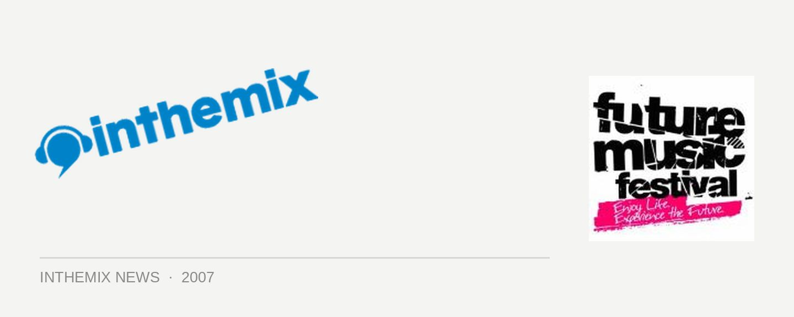

FMF the favourite festival for ITMers!
With winter fast approaching, we’ve just wrapped up the biggest summer festival season Australia has ever seen – with a number of veteran events like the Big Day Out and Good Vibrations sharing the limelight with fresh contenders like the V Festival. We put it to you guys to decide which one you enjoyed the most: now that the dust has settled, what was your favourite festival tour this summer?
The votes are in with over 1,100 people having their say, and the ITM community has decided overwhelmingly that the new national Future Music Festival is far and away their favourite of the bunch. In a result that was reflected by the ferocious hype seen in the forums across the different cities, it won a massive 42 per cent of the votes. Good Vibrations was next with 21.6 per cent, followed by the V Festival with 12.3 per cent, the Big Day Out with 10.3 per cent with ‘Other’ taking the remaining 13.8 per cent of the votes.
While Future Entertainment debuted its new brand of outdoor days festivals at Randwick Racecourse in Sydney last year, 2007 was the first time that it took the concept across the nation. Featuring an impressive lineup of international talent across a wide variety of dance music genres – house, electro, techno, progressive, trance, breaks, drum n’ bass and so on, it won favour with the dance community around the country and obviously had a unique appeal that won over ITMers in particular.
If you want to relive some of the Future Music Festival madness, check out the stacks of news, features and audio interviews on our Full Coverage Page.